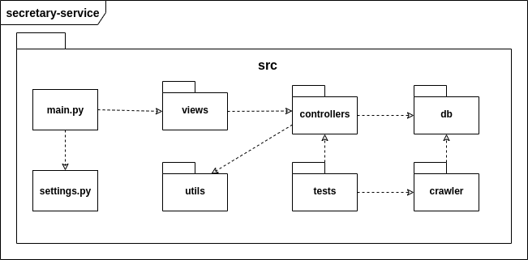

Documento de Arquitetura
1. Introdução
1.1. Finalidade
Este documento tem como objetivo fornecer uma visão geral da arquitetura do aplicativo Stay Safe. Visa apresentar de forma clara o fluxo de comportamento da aplicação e como as partes se relacionam, bem como expor de maneira objetiva as decisões arquiteturais que foram tomadas em relação ao projeto.
1.2. Escopo
Este documento de arquitetura se aplica ao Stay Safe. Estão descritos neste documento os padrões de arquitetura adotados, frameworks e linguagens escolhidas.
1.3. Definições, Acrônimos e Abreviações
- API - Application Programming Interface: conjunto de rotinas e padrões de programação que viabiliza a comunicação entre dois sistemas ou plataformas distintas.
- HTTP - Hypertext Transfer Protocol: protocolo de transferência e comunicação de dados.
- Backend - Parte da aplicação responsável pela conexão com o banco de dados e gerência das informações que serão enviadas ao frontend.
- Frontend - Parte da aplicação responsável pela interação com o usuário, utilizando recursos consumidos do backend.
2. Representação da Arquitetura
2.1. Diagrama de Relações
2.2. Flask
Flask é um framework de aplicativos web que utiliza a linguagem Python. Foi designado para se ter um início de projeto fácil e rápido, com a habilidade de escalar para aplicações complexas. Flask oferece sugestões, mas não força dependências e layouts ao projeto. Para saber mais acesse a documentação de Flask aqui
2.3. React Native
2.4. API Google Maps
2.5. SSP
2.6. PostgreSQL
2.7. MongoDB
3. Requisitos e Restrições de Arquitetura
-
Aplicação deve ser construída sobre a arquitetura de microsserviços, na qual o backend será desenvolvido em Flask e o frontend em React Native.
-
O aplicativo será funcional em smartphones com o sistema operacional Android e acesso à Play Store, necessita de conexão estável de internet para uso completo e atualizado do aplicativo.
-
A API secretary-service deve ser desenvolvida para consumir dados de diferentes secretarias, portanto deve ser facilmente escalável.
-
O serviço de mapas da aplicação será fornecido por uma API externa.
4. Visão de Implementação
4.1. User-Service

- src/ - Pasta raiz do projeto que contém todo o código fonte da API.
- main.py - Arquivo que controla a execução do programa e direciona as chamadas para outras funções.
- settings.py - Arquivo que contém todas as configurações do servidor e do banco de dados.
- views/ - Implementa os endpoints e define quais métodos HTTP serão utilizados.
- controllers/ - Camada responsável pelo fluxo do usuário na aplicação. Esta é usada para comunicação com a camada DB enviando informações para a View.
- utils/ - Armazena funções reutilizáveis que serão disponibilizadas para todo o projeto.
- tests/ - Inclui os testes unitários realizados dentro da API.
- db/ - Realiza a comunicação com o banco de dados relacional.
4.2. Secretary-Service

- src/ - Pasta raiz do projeto que contém todo o código fonte da API.
- main.py - Arquivo que controla a execução do programa e direciona as chamadas para outras funções.
- settings.py - Arquivo que contém todas as configurações do servidor e do banco de dados.
- views/ - Implementa os endpoints e define quais métodos HTTP serão utilizados.
- controllers/ - Camada responsável pelo fluxo do usuário na aplicação. Esta é usada para comunicação com a camada DB enviando informações para a View.
- utils/ - Armazena funções reutilizáveis que serão disponibilizadas para todo o projeto.
- tests/ - Inclui os testes unitários realizados dentro da API.
- db/ - Realiza a comunicação com o banco de dados não relacional.
- crawler/ - Responsável pela implementação dos crawlers que realizarão a extração metódica e automatizada de dados da Web.
4.3. Frontend

- src/ - Pasta raiz do projeto que contém todo o código fonte da aplicação.
- index.js - Arquivo que controla a execução do programa e direciona as chamadas para outras funções.
- config.js - Responsável por armazenar diferentes variáveis e a configuração da aplicação.
- screens/ - Contêm as telas da aplicação.
- utils/ - Armazena funções reutilizáveis que serão disponibilizadas para todo o projeto.
- components/ - Inclue os componentes primários que serão aproveitados nas telas da aplicação.
- public/assets/ - Possui as imagens e ícones estáticos utilizados no projeto.
5. Referências
Histórico de Revisão
| Data | Versão | Descrição | Autor |
|---|---|---|---|
| 26/08/2020 | 0.1 | Adicionando Introdução | Brenda e Hérick |
| 26/08/2020 | 0.2 | Adicionando Requisitos e Restrições de Arquitetura | Brenda e Hérick |
| 26/08/2020 | 0.3 | Adicionando Visão de Implementação | Brenda e Hérick |